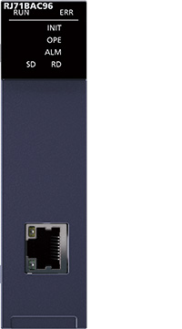
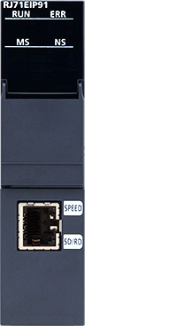
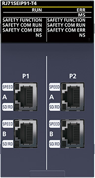
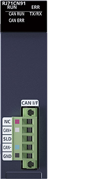
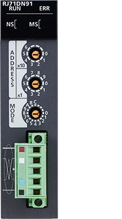
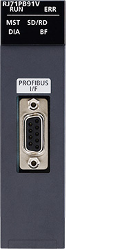
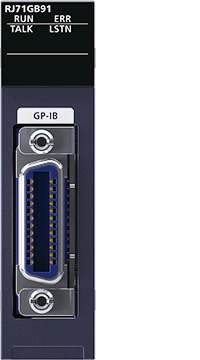

Controllers MELSEC iQ-R Series Product features -Network-

Other open networks
Modules supporting other open networks are also available.
Select modules ideal for network requirements.
Ethernet-based network-compatible modules


BACnet module specifications
| Item | RJ71BAC96 |
|---|---|
| Transmission specifications | |
| Transmission rate (bps) | 100M/10M |
| Communication mode | Full-duplex/half-duplex |
| Transmission method | Base band |
| Maximum segment length (m) | 100 (distance between switching hub and node) |
| IP version | IPv6/IPv4 |


EtherNet/IP network interface module specifications
| Item | RJ71EIP91 |
|---|---|
| Class 1 communications | |
| Communication format | Standard EtherNet/IP™, tag communications |
| Number of connections*1 | Standard EtherNet/IP™: 256, Tag communications: 256 |
| Communication data size (byte) | 1444 (per connection) |
| Connection type | Point-to-point, multicast |
| RPI (communication cycle) (ms) | 0.5…60000 |
| Class 3 communications | |
| Communication format | Standard EtherNet/IP™ |
| Number of connections | Server: 256*1, Client: None |
| Communication data size (byte) | 1414 (per connection) |
| Connection type | Point-to-point |
| UCMM communications | |
| Communication format | Standard EtherNet/IP™ |
| Number of connections (number of simultaneous executions) | Server: 96, Client: 32 |
| Communication data size (byte) | 1414 |
| Connection type | Point-to-point |
- *1.The total number of connections for Class 1 and Class 3 communications is 256.

CIP Safety module
CIP Safety module specifications
| Item | RJ71SEIP91-T4 |
|---|---|
| Class 1 communications | |
| Communication format | Standard EtherNet/IP™, tag communications |
| Number of connections*2 | 128 (Standard EtherNet/IP™ + tag communications) |
| Communication data size (byte) | 1444 (per connection) |
| Connection type | Point-to-point, multicast |
| RPI (communication cycle) (ms) | 1…60000 |
| Class 0 communications | |
| Communication format | CIP Safety over EtherNet/IP™ |
| Number of connections | Consumer: 120*3, producer: 120*3 |
| Communication data size (byte) | 14 (per connection) |
| Connection type | Point-to-point, multicast |
| RPI (communication cycle) (ms) | 4…1000 |
| UCMM communications | |
| Communication format | Standard EtherNet/IP™ |
| Number of connections (number of simultaneous executions) | Server: 32, client: 32 |
| Communication data size (byte) | 504 |
| Connection type | Point-to-point |
| Other | |
| Topology | Line, star, ring (The module can operate as a ring node and ring supervisor)*4 |
- *2.The maximum number of connections per port is 64.
- *3.For the CIP Safety module with the firmware version “01”, the number of connections is 60.
- *4.For the CIP Safety module with the firmware version “01”, the module can operate as a ring node only.
Serial-based network-compatible modules


CANopen module specifications
| Item | RJ71CN91 |
|---|---|
| Transmission type | CAN bus network (RS-485, CSMA/CR) |
| Supported network protocol | CANopen®, CAN |
| Supported communication service*5 | CiA®-301 V4.2, CiA®-302 V4.1, CiA®-305 V2.2 |
| Supported device/application profile*5 | CiA®-405 V2.0 (Interface and device profile for IEC 61131-3 programmable devices) |
| Remote transmit request (RTR) | CANopen® 405 mode: Not supported for PDO 11-bit CAN-ID Layer 2 message mode and 29-bit CAN-ID Layer 2 message mode: Supported |
| Communication data size (CANopen®405 mode) | 4 words x 256 (TPDO), 4 words x 256 (RPDO) |
| Selectable Node ID | 1…127 |
| Communication method | Acyclic, cyclic, or event-driven |
| Transmission speed (bps) | 1M/800k/500k/250k/125k/100k/50k/20k/10k |
| Maximum cable length (m) | 5000 (10 kbps), 2500 (20 kbps), 1000 (50 kbps), 600 (100 kbps), 500 (125 kbps), 250 (250 kbps), 100 (500 kbps), 50 (800 kbps), 25 (1 Mbps) |
| Interface | Two-piece pluggable terminal block |
| Setup software | |
| CANopen configuration tool | SW1DNN-CANOPCT-BD*6 |
- *5.Compliant with CiA® standards.
- *6.To obtain the software, please contact your local Mitsubishi Electric office or representative.


DeviceNet master/slave module specifications
| Item | RJ71DN91 |
|---|---|
| Operation mode | Master, slave, master/slave combined |
| Settable station number | 0…63 |
| Transmission speed (baud) | 125k, 250k, 500k |
| Master functions | |
| Node type | DeviceNet® master (Group2 only client) |
| Max. number of message connections | 63 |
| Max. message communication data size (byte) | 240 (each for transmit/receive) |
| I/O connection type | Polling, bit-strobe, change-of-state (COS), cyclic |
| Max. I/O communication data size (byte) | 512 (each for transmit/receive, max. 256 per station) |
| Slave functions | |
| Node type | DeviceNet® slave (Group2 server) |
| I/O connection type | Polling |
| Max. I/O communication data size (byte) | 128 (each for transmit/receive) |


PROFIBUS-DP module specifications
| Item | RJ71PB91V | |
|---|---|---|
| PROFIBUS-DP station type | Class 1 master or slave station (either one can be selected) | |
| Transmission speed (bps) | 9.6k…12M | |
| Max. number of connectable modules (per segment) | 32 (including master stations, slave stations, and repeaters) | |
| Max. number of connectable modules (per network) | 126 (including master and slave stations) | |
| I/O data size | ||
| Master station | Max. input data (byte) | 8192 (max. 244 per slave station) |
| Max. output data (byte) | 8192 (max. 244 per slave station) | |
| Slave station | Max. input data (byte) | 244 (total I/O data: max. 384) |
| Max. output data (byte) | 244 (total I/O data: max. 384) | |
| Setup software | ||
| PROFIBUS configuration tool | SW1DNN-PROFIBDCT-ED*7 | |
- *7.To obtain the software, please contact your local Mitsubishi Electric office or representative.

PROFINET IO Controller module specifications
| Item | RJ71PN92 |
|---|---|
| Data exchange | |
| Maximum input data length per network (word) | 4096 |
| Maximum output data length per network (word) | 4096 |
| Maximum input data length per IO device (byte) | 1437 |
| Maximum output data length per IO device (byte) | 1437 |
| Cycle time (ms) | 512 (max.), 1 (min.)*8 |
| Service interface | |
| Maximum transmission capacity per request (byte) | 4116 |
| Maximum number of connectable IO devices | 128 |
| Data transmission speed*9 (bps) | 1G/100M/10M |
- *8.The cycle time depends on the number of IO devices and the input/output data length.
- *9.Data communications at 100 Mbps is recommended.
PROFINET IO Device module specifications
| Item | RJ71PN93 |
|---|---|
| Data exchange | |
| Maximum I/O data length (byte) | 1024 (total size of the I/O data) *10 |
| Cycle time (ms) | 512 (max.), 2 (min.) |
| Other | |
| PROFINET® communication specifications | Conformance class B |
| MRP (Media Redundancy Protocol) | MRC*11 |
| Data transmission speed*9 (bps) | 100M/10M |
- *10.For details on I/O data, please refer to the “MELSEC iQ-R PROFINET IO Device Module User's Manual (Application) (SH-082366ENG)”.
- *11.The RJ71PN93 operates as an MRC in a ring topology. To perform communications in the ring topology, a device in the ring topology has to operate as the MRM (Media Redundancy Manager).
Another network-compatible module


GP-IB interface module specifications
| Item | RJ71GB91 |
|---|---|
| Transmission method | 8 bits parallel transmission |
| Interface | IEEE 488.1 compliant |
| Network topology | Star topology, daisy chain topology |
| Cable length | 2 m or less per interface module (overall cable distance: 20 m) Max. 4 m when used for one to one connection |
| Max. number of connectable devices | 15 (includes GP-IB interface module) |
| Max. number of data that can be sent/received at a time (byte) | 32360 (send) 32360 (receive) |
| Max. data transfer speed (per second) | The transfer speed of the slowest device among the connected devices 100 KB (when one device is connected to one GP-IB interface module) |